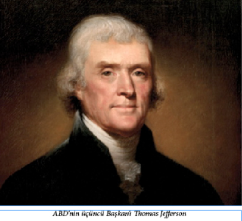
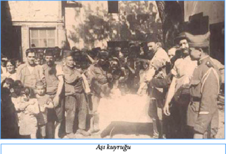

ABD’NİN VERGİ ÖDEDİĞİ TEK DEVLET
OSMANLI İMPARATORLUĞU’DUR
Amerika Birleşik Devletleri ya da arşiv kayıtlarımıza geçen adıyla “Memâlik-i Müctemia-i Amerika Devleti”nin ilk kurulduğu dönemde başı, Osmanlı’nın Kuzey Afrika’daki Garp Ocakları’yla fena halde dertteydi. Cezayir, Tunus ve Trablusgarplı “resmî korsanlar” Akdeniz’de kol geziyor, kendileriyle veya doğrudan Osmanlı Devleti’yle antlaşma yapmamış olan veya savaş halinde oldukları devletlerin gemilerini yakalayıp el koyuyor, fidye isteyerek karşı tarafı ekonomik olarak ve moral açısından çökertiyorlardı. Amerikan gemileri 18. yüzyılın sonlarında Akdeniz ticaretinin getireceği kazancı hesaba katarak Akdeniz’e yöneldi. Fransa, Akdeniz’deki ticaret gemilerinin güvenliğini sağlamak için Osmanlı’ya yıllık 200.000 İspanyol doları vergi ödemekteydi. Bu miktar İngiltere için de yıllık 280.000 İspanyol doları olarak belirlenmişti. Ancak o yıllarda Amerika’nın, Osmanlı Devleti ile imzaladığı bir dostluk anlaşması yoktu. İşte bu yüzden Osmanlı korsan gemileri bu sularda dolaşan Amerikan gemilerine saldırmaya ve mürettebatını esir etmeye başladılar.
25 Temmuz 1785’te, ABD bandıralı ilk gemi Cezayir açıklarında Osmanlı korsanlarınca ele geçirildi. Bu gemi Boston Limanı’na bağlı, Kaptan Isaac Stevens’in idaresindeki Maria idi. Daha sonra Philadelphia Limanı’na bağlı Kaptan O’Brien idaresindeki Dauphin de Osmanlı korsanları tarafından yakalandı. 1793 Ekim ve Kasım aylarında ise tam on bir ABD gemisi Osmanlıların eline geçti.
ABD kamuoyunda artık iyice büyük bir sorun olmaya başlayan durum karşısında Amerikan Kongresi’nde tedbirler alınması istendi. Kongre, Başkan George Washington’a bir savaş filosu kurması için 688.000 altın dolar harcama yetkisi verdi. Fakat bu donanma da Osmanlı korsanlarıyla baş edemeyince, ABD yönetimi Osmanlı’ya yıllık vergi ödemek zorunda kaldı. 5 Eylül 1795 (Hicrî: 21 Safer 1210) tarihinde düzenlenen “Dostluk ve Barış Anlaşması”na göre Amerika, Cezayir’de bulunan esirlerin bırakılması için 642.500 dolar “haraç” ödeyecek ve her sene 12.000 Cezayir altını karşılığı 21.600 dolar “vergi” verecekti. Anlaşma 7 Mart 1796’da Amerikan Kongresi’nce de onaylandı.
Bu vergi anlaşması A.B.D. tarihinde İngilizce dışında bir yabancı dilde (Osmanlı Türkçesi) imzalanan ikinci (ilki Fas ile ABD arasında 1786’da Arapça olarak yazılan anlaşmadır) anlaşmadır. Ayrıca bu anlaşma ABD’nin tarihi boyunca başka bir devlete vergi ödemeyi taahhüt ettiği tek antlaşmadır. Anlaşma 1810’da İngiliz gemilerinin devreye girmesiyle kendiliğinden fesholmuştur.
KADINLARA İNCE KUMAŞ YASAĞI
III. Selim zamanında 1791 (Hicrî 1206) yılında birer nüshası İstanbul, Eyüp, Galata ve Üsküdar Kadılarıyla, Yeniçeri Ağası’na ve terzibaşıya gönderilmiş bir yasak fermanı daha:
“… Kadın taifesinin sokaklarda ve pazarlarda iştah çekici tavırlarla dolaşmaları öteden beri yasaktır. İngiliz şalı denilen çuha gayet ince olduğundan, o çuhadan ferace giyen kadınların ferace altındaki esvapları dışarıdan görünüyor. Kadınların İngiliz kumaşından ferace kestirmeleri önceden de şiddetle yasaklanmıştı. Kadınlar Engürü kumaşından ferace kestirmeye başladılar. Bu kumaş da ince ve kadınlar âdeta sokağa feracesiz çıkmış gibi olduğundan o da yasak edilmişti. Bu arada bazı hayâsızların yine Engürü kumaşından ferace kestirdiklerini ve giydiklerini işittik ve gördük… Yasağımızın dikkat ve şiddetle uygulanmasını ve terzilerin Engürü kumaşından ferace kesip dikmemelerini tekrar emrediyorum. Bu yasağımızı dinlemeyen terzi yakalanırsa, aman verilmeyip dükkânının kapısına asılacaktır.”
CELLÂT ÇEŞMESİ
Dünyadan son nasibi olan ecel şerbetini içen mahkûm ölümün bütün soğukluğunun duvarlarına sindiği korkunç zindandan çıkarılır, Topkapı Sarayı’nın birinci kapısı olan Bâb-ı Hümayun’la, ikinci kapısı olan Bâb-üs Selâm arasında bulunan Cellât Çeşmesi’nin önüne getirilirdi. Sonra da başı çeşmenin önündeki taşın üzerine konularak, Bostancıbaşı’nın da gözetiminde, Cellâtbaşı’nın güçlü bir kılıç darbesiyle idam edilirdi. İnfaz gerçekleştikten sonra cellâtlar kanlı palalarını, satırlarını bu çeşmede yıkadıkları için çeşmeye Cellât Çeşmesi denmişti. Bir diğer adı da siyasi mahkûmların infazı burada gerçekleştiğinden dolayı “Siyaset Çeşmesi” idi. Cellâtlara ise “Meydan-ı Siyaset Ustası” denirdi bir dönem. Bazen de mahkûm Balıkhane Kasrı’nda şerbetini içer içmez kementle boğularak öldürülür, cesedi de ayağına taş bağlanılarak denize atılırdı. Başı kesilerek öldürülenlerin kesik başı, çeşmenin önünde ve karşısında bulunan Seng-i İbret (İbret Taşı) adındaki sütunların üzerine ya da Bâb-ı Hümayun’un nişlerine konur, üç gün bekletildikten sonra, başsız cesedi gibi kellesi de denize atılırdı. Yabancı gezginler Sarayburnu açıklarından gemiyle geçerlerken, denizin yüzünde böyle nice başsız cesetlere rastladıklarını yazmışlardı. Cellât Çeşmesi Sultan II. Abdülhamit tarafından Alman İmparatoru Kayzer II. Wilhelm’in görmemesi için, imparatorun 1898’deki İstanbul ziyareti sırasında kaldırılmış, yerine Hamidiye Çeşmesi dikilmiştir.
OSMANLI SULTANLARININ LAKAPLARI
Osmanlı döneminde soyadı olmadığı için lakap uygulaması son derece yaygındı. Halk arasında herkesin bir adı vardı, ama bunlardan başka sultanların da kimi övgü belirttiği için açıkça kullanılan, kimi de çeşitli yanlara çekilebileceği için ancak gıyapta kullanılan takma adları vardı. Osmanlı sultanları arasında, en bilinen takma adlara sahip olan sultanları ve lakaplarını şöyle sayabiliriz:
ADLÎ : “Adil” II. Bayezit, III. Mehmet ve II. Mahmut’a verilmiştir.
AVCI: IV. Mehmet’in takma adıdır.
BAHTÎ: “Talihli” I. Ahmet’e verilmiş ve onun tarafından şiirlerinde mahlas olarak kullanılmıştır.
BEDROS: “Kurnaz” Genel kullanımı olan bir Ermeni adıdır ve güya II. Abdülhamit’in yüz hatları itibariyle Ermenilere benzediğini ima için ona verilmiştir. Abdülhamit’in annesi Tirimüjgan’ın muhtemelen Ermeni olması nedeniyle, ondan pek hoşlanmayanlar tarafından kendisine verilmiş bir takma addır.
CİHANDAR: “Dünya’nın Efendisi” III. Selim’e verilmiştir.
ÇELEBİ: “Beyefendi” “Kibar Efendi”, “Genç Efendi”. II. Mehmet dönemine kadar padişah oğullarına verilen unvandır ve özellikle de I. Mehmet’e verilmiştir.
DELİ: I. Mustafa ve İbrahim’e verilmiştir.
DÜZME(CE): “Sahte” Kendi adına çıkan isyan döneminde ve aslı konusundaki şüpheyi ifade etmek üzere Yıldırım Bayezit’in en büyük oğlu ve veliahdı Mustafa Çelebi’ye verilmiş lakaptır.
EBU’L FETH: “Fethin babası” II. Mehmet’e (Fatih Sultan Mehmet) verilmiştir.
EĞRİ: “Eğri büğrü” Kanuni Sultan Süleyman’ın topal ve kambur olan oğlu Cihangir’e verilmiştir.
EĞRİ FATİHİ: Fethi çok zor olan Eğri Kalesi’ni 1594’te fethettiği için, III. Mehmet’e verilmiştir.
FAHREDDİN: “Dinin övüncü” I. Osman’a verilmiştir.
FATİH: İstanbul’un fethinden dolayı II. Mehmet’e verilmiştir.
FATİH-İ BAĞDAT: “Bağdat’ı fetheden” IV. Murat’a verilmiştir.
GAZİ: Özellikle Hristiyanlara karşı alınmış zaferlerdeki askerlere verilen unvandır. I. Osman, Orhan, I. Murat,
I. Bayezit ve II. Mehmet için kullanılmıştır.
HÂDİM-ÜL HARAMEYN-İŞ ŞERİFEYN: “İki mübarek şehir olan Mekke ve Medine’nin koruyucusu”
I. Selim’e 1517’de Mekke Şerifi tarafından bu şehirlerin anahtarı gönderilmek suretiyle verilmiş bir unvandır.
HAN: II. Selim tarafından torunu İbrahim’e verilmiştir.
HÜDAVENDİGAR: “Hükümdar” I. Murat’a verilmiş ve daha sonra da Bursa Sancağı için de kullanılmıştır. Yine Orhan ve II. Murat için de kullanılmıştır.
İLHAMÎ: “İlham alan” Şair ve besteci III. Selim’e verilen lakaptır.
KAMBUR: I. Mahmut’a verilmiştir.
KANLI: Baskıcı politikasını ima için II. Abdülhamit’e verilmiştir.
KANUNÎ: “Adil” II. Mehmet’e ve özellikle de
I. Süleyman’a verilmiştir.
KARA: I. Osman’a verilmiştir.
MEST: “Sarhoş” II. Selim’e verilmiştir.
MUHTEŞEM: Avrupalılar, özellikle Fransızlar tarafından I. Süleyman’a verilen lakaptır. Yakın zamana kadar Türkler tarafından pek kullanılmazdı, ama son on yıldır bizde de moda oldu…
OSMANCIK: “Küçük Osman” I. Osman’a verilmiştir.
PEHLİVAN: Güreşe çok meraklı olan I. Mehmet’e verilmiştir.
SAHİB-KIRAN: “Her zaman başarılı hükümdar” I. Süleyman ve IV. Murat’a verilen unvandır.
SAİB-ÜL-AŞERET-İL-KAMİLET: “On numarayı tamamlayan”. Onuncu sultan olduğu için I. Süleyman’a verilmiştir.
SARI: Çok soluk tenli olduğu için II. Selim’e verilmiş bir diğer lakaptır.
SOFU: II. Bayezit’e verilmiş lakaptır.
ŞÜCAEDDİN: “Dinin kahramanı” Orhan’a verilen unvandır.
VELİ: II. Bayezit’e verilen unvandır.
YAVUZ: “Yiğit” I. Selim’e verilmiş lakaptır.
YILDIRIM: I. Bayezit’e verilmiştir.
OSMANLI’NIN ŞAİR SULTANLARI
Osmanlı İmparatorluğu padişahları arasında şiir yazan, hatta divan oluşturanlar hiç de az sayıda değildir. Şair padişahlar ve mahlasları (takma adları) ise şöyledir:
II. Murat: Muratî
Fatih Sultan Mehmet: Avnî
II. Bayezit: Adlî
Kanuni Sultan Süleyman: Muhibbî
III. Mehmet: Adnî
I. Ahmet: Bahtî
II. Osman: Farisî
IV. Murat: Muratî
II. Mustafa: İkbalî
III. Ahmet: Necib
III. Mustafa: Cihangir
III. Selim: İlhamî
II. Mahmut: Adlî
ABD BAŞKANI THOMAS JEFFERSON’DAN
“CÜLUS BAHŞİŞİ” İSTEYEN PAŞA

George Washington’un ardından John Adams o günlerde yeni bir devlet olan Amerika Birleşik Devletleri’nin ikinci başkanı olmuştu. Yeni başkanın “gelenek görenek” konusunda pek bilgili olmadığına kanaat getiren Trablusgarp Dayısı Yusuf Paşa 1799 yılında dostunu uyarmayı uygun bulur. Yusuf Paşa, “Ölen yüksek makam sahibi adına o makama gelen yeni başkanın Trablus Krallığı’na bir hediye sunması” gerektiğini, Adams’a bir ferman yazarak, konuyu uygun bir dille anlattı. Tüm bunlara ek olarak, “hediye” miktarının 10.000 dolar olduğunu belirtmeyi de ihmal etmedi.
Bir zaman sonra, 10.000 dolarından haber alamayan ve sabırsızlığı üst seviyeye ulaşan Yusuf Paşa aradığı fırsata 1801 yılında kavuştu. Adams yerini Thomas Jefferson’a bırakmıştı. Garp Ocakları’nın yönetiminde yer alan tüm yöneticiler gibi “yeniçeri kökenli” olan Yusuf Paşa yeni başkan Jefferson’dan 225.000 dolarlık “cülus bahşişi”ni talep etti. Jefferson bu talebi kızgınlıkla reddetti.
Trablusgarp Dayısı Yusuf Paşa da kızgındı. Paşa Amerikan temsilcilerinin derhal huzuruna çıkmaları ve hatalarını kabul ederek el öpmelerini emretti! 225.000 dolarlık cülus bahşişinin yanı sıra, Yusuf Paşa’nın seçeceği türden 25.000 dolarlık malın “hediyesi”ni de uygun buldu! İlk mesajın yeterince ciddiye alınmaması Yusuf Paşa’yı bu defa daha “ikna edici” davranmaya itti. Mesaj netti: Ya “hediye” ya da savaş! Sonunda da savaş çıktı. Trablusgarp Dayısı Yusuf Paşa, Amerikan tarihine “First Barbary War” (İlk Barbar Savaşı) adıyla geçecek olan savaşı 10 Mayıs 1801 tarihinde başlattı.
Trablusgarp Dayısı’nın ABD’ye savaş ilan etmesi üzerine Jefferson, Amerikan donanmasını Akdeniz’e gönderdi. Tunus ve Cezayir savaştan hemen çekilirken, Trablusgarp ve Fas, aralıklarla 1815’e dek sürecek olan zorlu bir mücadeleye giriştiler. 1803 Ekim’inde Trablusgarp Dayısı, Amerikan donanmasının en iyi firkateynlerinden biri olan Philadelphia’yı ele geçirerek, gemi kaptanı Amiral William Bainbridge ve tüm mürettebatını esir aldı.
Philadelphia’nın kaptırılması Amerikalıların küçük düşmesine neden oldu. Bunun üzerine, 16 Şubat 1804 tarihinde Amerikan donanması tarafından alınan ilginç ve radikal bir karar uygulanmaya kondu. Enterprise’ın kaptanı olan genç teğmen Stephen Decatur, Trablusgarb limanına girdi ve bir zamanlar Amerikan donanmasının en iyi gemilerinden biri olan Philadelphia’yı kendi elleriyle ateşe verdi. Teğmen ülkesine döndüğünde bir savaş kahramanı olarak karşılanmıştı.
“BALTA OLMAK” DEYİMİ VE
YENİÇERİ DÖVÜŞLERİ
Yeniçeriler İstanbul limanına gelen bütün mal ve erzak gemilerinin komisyonculuğunu bıçaklarının kuvvetiyle yönetimleri altına almışlardı. Limana bir gemi geldi mi, açıkta demir attı ise sandalla gidip, bir iskeleye palamar verdiyse hemen gemiye atlayıp mensup oldukları ortanın nişanını ve kendi adlarını taşıyan bir levhayı geminin burnuna asarlardı. Geminin yükü ne olursa olsun, mal ve erzakın sahibi ve geminin kaptanı, boşaltma ve satış işine karışamazdı. Bu işi gemiyi sahiplenen o yeniçeri yapar ve tutar parasından dilediği aslan payını alırdı, kimse ağız açamazdı. Elbette bu tür davranan yeniçerilerin asıl güvendikleri arkalarındaki ortalarıydı. Sahiplenmek niyetiyle gemilere asılan bu zorba nişanlarına “balta” denilirdi ki, bugün bile halk ağzında “musallat olma” yerine kullanılan “balta olmak” deyimi buradan kalmıştır. Geminin yükü dikkat çekecek kadarsa, bıçağına ve avanesine güvenen bir başka zorba önceden takılan baltayı indirir, yerine kendi nişanını asar ve derhal oracıkta kanlı bir kavga başlardı. Bir tarafın öbür tarafı sindirmesine “bıçak altından geçirme” denilirdi. Bazen da sırf külhanbeylik güdülerek, zorbalar arasında, bilhassa Galata’da Hendek içinde, günü, saati ve şahitleri de tespit edilmek suretiyle yatağanlar, palalarla, Batılıların düello etmesi gibi, teke tek dövüşülürdü. Bu dövüşlerin çoğu ölümle neticelenir, eğer taraftarlar kendilerini tutamayarak ortaya atılırlarsa gerçek bir çatışma yaşanırdı.
YENİÇERİ KÜFELERİ
İstanbul’un yaş sebze ve meyve ticaretine musallat olmuş yeniçeriler işi daha da ileri götürmüşler, kendilerinin nişan ve işaretlerini taşıyan özel küfeler yaptırmışlardı. Bunları İstanbul’a sebze ve meyve taşıyan Marmara iskelelerinden kendilerine ayırttıkları yerlere gönderirlerdi. Bostan ve bahçe sahipleri mallarını bu küfelere yüklemeye ve yeniçeri zorbasının göndereceği para ile yetinmeye mecbur idiler. Hatta bir seferinde, bir yeniçeri zorbası Karamürselli bahçıvanlara pusula göndererek: “Mal şu kadar noksan çıktı, bu kadar çürük çıktı, hamaliye ve kantariye masrafları şu tuttu, sair resimler ve küfelerimizin kirası bu kadar, bana daha şu kadar borcunuz vardır” diye yazmış, bahçıvanlar da bu pusulayı ibret olmak üzere Karamürsel’deki kahvehanenin duvarına asmışlardı.
TAHMİSTE HİLEKARLIK
O zamanlar kahve değirmende çekilmez, kavrulduktan sonra tahmisteki büyük devlet dibeklerinde dövülürdü. Saf kahveye nohut ve buna benzer şeyler katmamaları için, dibekçilerin başında her gün ihtiyar yeniçeri ustalarından dört kişi bulunurdu. Tahmis dibeklerinde halka ve kahvecilere ait her gün en az 2000 okka kahve dövülürdü. Bu yeniçeri ustaları ellerinde saf kahve ile gelenleri: “Var dolaş, falan zaman gel!” diye dibek başından zorla uzaklaştırırlar ve sonra getirilen saf kahveye yarı yarıya nohut katıp, aradaki farkın kârını dibekçilerle paylaşırlardı.
SEMER DEVİRMEK VE ORTA SAVAŞLARI
Yeniçeriler arasında, bir yoldaşın mensup olduğu bir ortayı bırakıp başka bir ortaya geçmesine “semer devirmek” denirdi. Bu hal terk edilen orta yoldaşlarına karşı en ağır hakaret sayılır, semer deviren yeniçeri muhakkak öldürülür ve bu yüzden iki yeniçeri ortası arasında kanlı boğuşmalar olurdu. Örneğin, Galata yeniçerilerinden 25. orta yoldaşlarından biri 1810’da, yine Galata’nın korunmasıyla görevli 71. ortaya semer devirdiğinden Galata derhal karıştı. İki taraf mağaza, dükkân ve depoların kepenklerini kırarak şarap, su ve yağ varillerinden, fıçılardan, dolu erzak çuvallarından sokaklarda siperler yaptılar. Karşıdan silah seslerini duyan İstanbul yeniçerileri de, taraftar bulundukları bu iki ortadan birine yardım için kayıklarla Galata’ya geçti, çatışmalar iki gün sürdü.
YANGINLAR VE TULUMBACI YENİÇERİLER
O devirlerde sık sık çıkan yangınlardan bazılarının da yeniçeri ocaklarına bağlı kişiler tarafından konulan kundaklarla çıktığı söylenir; çünkü her büyük yangın bu gibi insanlar için bir yağma vesilesi olurdu. Bundan ötürü yağma amacıyla, kundaklamayla çıkarılan yangına “kızıl bayram” derlerdi. Yeniçeri tulumbacılarına gelince; yangın çıktığında yalnızca kendilerine fazla para ve bahşiş vaat eden zengin kimselerin konaklarını korurlardı. Bu arada alevlerin, yoksulların evine yayılmasını önlemeye çalışmazlardı.
YALANCI ŞAHİTLİĞİN CEZASI
Olayların çözümlenmesinde şahitlik önemlidir. Bazı insanlar zafiyet gösterip yalancı şahitlik yapabilmektedirler. Bu durum ise vakaların doğru çözümlenmesine mani olmaktadır. İşte bundan dolayı adalete son derece ehemmiyet veren Osmanlı, yalancı şahitliği önleyebilmek için bazı tedbirler almıştır.
Yalancı şahitliği tespit edilen kişi ‘kadı’nın emri ile muhzırlar (adli polis) tarafından uyuz bir eşeğe bindirilmekte, suçunu bağıran bir tellağın eşliğinde, bulunduğu şehrin caddelerinde dolaştırılıp teşhir edildikten sonra serbest bırakılmaktaydı. Böyle bir kişi şahitlik etmek hakkını hayatının sonuna kadar kaybetmekteydi.
Şahitliği devlet güvenliğini ilgilendiren bir mevzuda ise hapsedilmekte, padişahın şahsını ilgilendiren bir mevzuda ise idam edilmekteydi. Görüldüğü gibi yalancı şahitliğin cezası oldukça ağırdı. Bu cezalar caydırıcı özelliği ile yalancı şahitlerin sayısını azaltmış, böylece verilen mahkeme kararları güvenli olmuştur.
ZÜLÜFLÜ BALTACILAR
Sultan II. Mahmut döneminde kurulan “Baltacılar Örgütü”nün görevi sefere çıkan ordunun yolu üzerindeki çalılıkları, yabanı bitkileri ve otları vs. temizlemek, çadırları kurup kaldırmak, ordunun yükünü bağlayıp yüklemekti. İstanbul alındıktan sonra baltacıların bir bölümü “zülüflü baltacılar” adıyla yeni bir sınıf oluşturdu. Görevleri eski sarayla yeni saray arasındaki bağlantıyı kurmaktı. “Zülüflü” denmelerinin nedeni serpuşlarının iki yanından yanaklarına doğru perçem gibi iki örgü sarktığı içindi. Bunların haremle sıkı ilişkileri olduğu için, sağ ve sol yanlarını tam görmemeleri için atlastan yapılma, yüksek yakalar takarlardı. Bu nedenle bir adları da “yakalı baltacılar”dı.
OSMANLI’DA İLGİNÇ VAKIFLAR
Bilindiği gibi, vakıflar yüzyıllardır Osmanlı toplumunda sosyal yardımlaşmanın ve toplumsal bölüşümün en önemli kurumları olmuşlardır. Bu vakıflar o kadar çeşitliydi ki, eski dönemlere şu konularda çalışan vakıflar bile vardı:
• aç kalan kuşların beslenmesi,
• bayram günlerinde şehir ve kasabalarda top atılarak çocukların sevindirilmesi,
• koyun cinsinin ıslah edilmesi,
• et fiyatlarının kış aylarında yükselmemesini sağlayacak tedbirlerin alınması,
• hasta ve garip göçmen leyleklerin bakım ve tedavi edilmesi,
• çalışan kadınlara sütanne bulunması,
• hac yolunda parasız kalanlara para dağıtılması,
• cami ve türbe duvarlarındaki ot ve yosunların temizlenmesi,
• Ramazan aylarında camilerde hurma, zeytin gibi iftariyeliklerin dağıtılması,
• köylerde yaşayan yoksul ihtiyarlara elbise temin edilmesi,
• hamalların sırtlarındaki yükleri, üzerine koyup dinlendikten sonra kimsenin yardımına muhtaç olmaksızın sırtlanabilmeleri için mola taşları dikilmesi,
• yüksek dağ ve geçitlerde kar ve tipiden korunmak için sığınak yapılması,
• yaz aylarında sıcaktan bunalanlar için gölgelik yapılması gereken yerlere su küplerinin konulması...
İÇKİNİN “YOK” ZAMANI…
III. Selim devrine ait muazzam bir vakayiname bırakmış olan Câbi Sait Efendi yazıyor:
“Sultan Selim ne kadar meyhane var ise kapattı. Şarap, rakı ve onlara benzer ne kadar içki varsa hepsini şiddetle yasak etti. Yasağa rağmen içki kullanan birkaç kişi idam edildi. Müslümanlara içki vermemeleri ve satmamakları için; Rumlara ve Ermenilere patrikleri, Yahudilere de Hahambaşılar’ı tarafıından tembih edildi. Aksi takdirde verenlerin ve satanların idam edilecekleri bildirildi. Ayyaşların hali kötüleşti ama çok geçmedi, el altından içki satanlar da peyda oldu. Örneğin, bir adam eline bir bülbül kafesi alıp sokağa çıkar, sorana “bülbülümü gezdirmeye giderim” derdi, ama kafesin içine bağırsak konulmuş, bağırsaklar da rakı ile doldurulmuş! Kafesin ağırlığından şüphelenen zabıta herifi yakalamış, rakıyı meydana çıkarmış. Ağa Kapısı’na götürmüşlerse de şefaatçileri çıkıp adam kurtulmuş… Bazıları da işçi, çamaşırcı kefere karılarından tedarik etmişler… Bekâr çamaşırı getirip götürmek bahanesiyle çamaşır, yatak ve yorgan çarşafları içinde gizli rakı ve şarap getirmişlerdi… Teneke boru satan ve boru vesaire lehimleyen Yahudiler türedi… Boruların içi rakı ve şarap dolu… Erbabına rastladıklarında içindekini sunarlar, bir yabancı borulara müşteri olsa “satılık değil, ısmarlamadır” derlerdi… Birçok içkici evlerinde, bahçelerinde imbikler kurup kendi içkilerini yapmaya başladırlar. Öyle ki, Sultan Bayezid tarafındaki bakırcılarda, bu kadar yıldır bir müşteri bile çıkmayan imbiklerin bir tanesi dahi kalmadı, satıldı… Bazı kibar beyler çoğu Laz olan bakırcılara ‘Sende imbik var mı?’ diye sorarlarken kızarırlar, onlar da kıs kıs gülüp: ‘Sarhoşlar meyhaneciliğe heves etti… İmbikler yağma oldu, yağma!’ diye cevap verirlerdi…”
